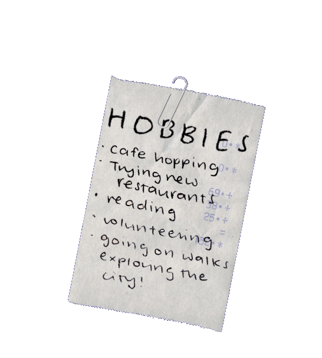
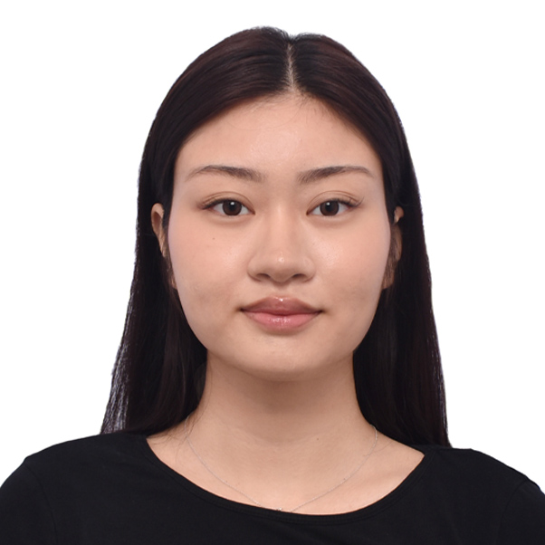

about me!

A Graduate Student in Marketing at Boston University
Raised across Jakarta, Singapore, Taiwan, and Sydney before landing in Boston, I've spent my life navigating cultural contexts that most people only read about. That background isn't incidental to my marketing work — it's the foundation of it. I understand intuitively how culture shapes the way a message is received, and I build every campaign, brief, and piece of copy with that in mind.
My path into marketing runs through an unlikely place: food science. Studying nutrition and food product development at the University of Sydney gave me a rigor and a consumer-first perspective that I carry into everything I do. When I analyze a brief, I'm asking the same questions I'd ask in a lab — what do we actually know, what are we assuming, and what would it take to prove it?
I'm drawn to purpose-driven organizations: emerging companies, social ventures, and initiatives where thoughtful marketing can help a genuinely good idea gain traction and long-term sustainability. If your work is trying to connect with people in a real way, I'd like to help.
Facts